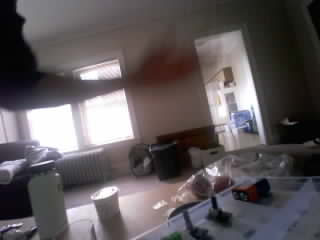
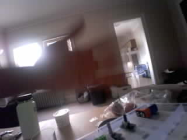
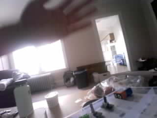
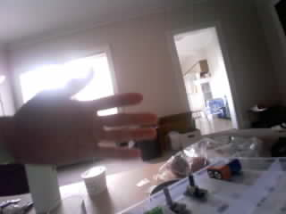
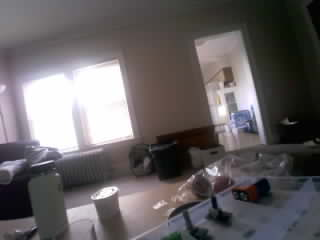
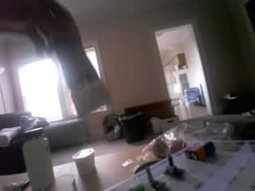
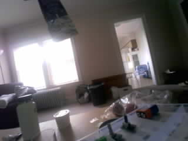
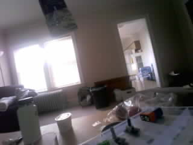

Frame 27: CONFIRMING | 12.750% changed area
Original JPEG · MeasurementsOriginal photos are unchanged. Boxes show the largest changed region against the learned empty scene. Area cutoff is recorded with each photo; confirmation: 3 frames. This is not deer recognition.

Frame 27: CONFIRMING | 12.750% changed area
Original JPEG · Measurements
Frame 28: CONFIRMING | 22.396% changed area
Original JPEG · Measurements
Frame 29: CONFIRMING | 22.771% changed area
Original JPEG · Measurements
Frame 30: LARGE_CHANGE | 16.958% changed area
Original JPEG · MeasurementsFrame 31: SMALL_CHANGE | 1.833% changed area
Original JPEG · MeasurementsFrame 32: SMALL_CHANGE | 1.833% changed area
Original JPEG · MeasurementsFrame 33: SMALL_CHANGE | 1.792% changed area
Original JPEG · Measurements
Frame 34: SMALL_CHANGE | 1.833% changed area
Original JPEG · MeasurementsFrame 35: SMALL_CHANGE | 1.833% changed area
Original JPEG · Measurements
Frame 36: CONFIRMING | 12.104% changed area
Original JPEG · Measurements
Frame 37: SMALL_CHANGE | 3.292% changed area
Original JPEG · Measurements
Frame 38: SMALL_CHANGE | 1.792% changed area
Original JPEG · MeasurementsFrame 39: SMALL_CHANGE | 2.792% changed area
Original JPEG · MeasurementsFrame 40: SMALL_CHANGE | 2.833% changed area
Original JPEG · Measurements